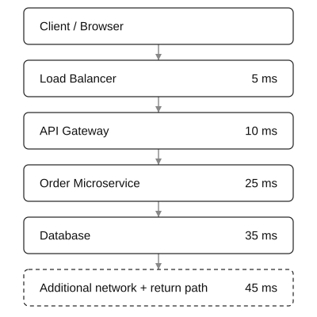
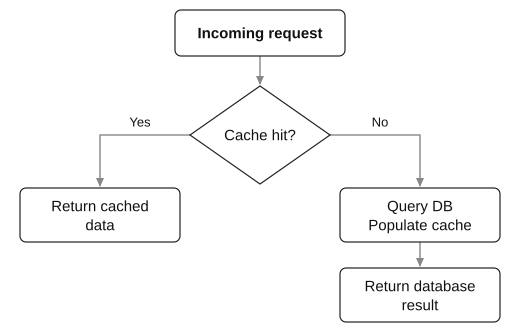
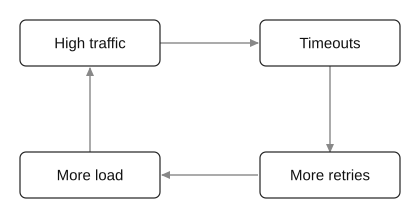
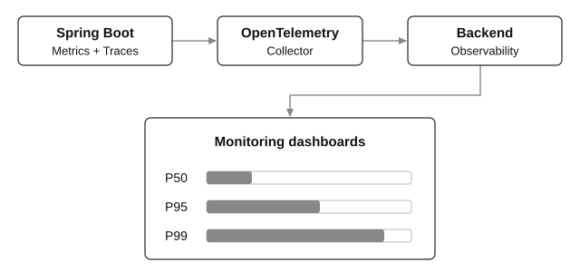

Latency is one of the most important performance characteristics of a software system. It directly affects user experience, API responsiveness, database performance, microservice communication, throughput, scalability, and reliability.
In system design, understanding latency involves much more than measuring how long an API takes to respond. We need to understand where the time is spent, how latency accumulates across distributed components, why latency suddenly increases under load, and how to design systems that maintain predictable response times.
Latency is the amount of time that elapses between initiating an operation and observing its completion or a defined response.
In backend engineering, latency commonly refers to the elapsed time between sending an HTTP request and receiving its response.
For example:
GET /api/products/101.The end-to-end request latency is 120 ms.
The measurement starts at the client and ends when the response is received.
Important: Latency depends on measurement boundaries
The same request can have different latency values depending on where it is measured.
| Measurement | Example |
|---|---|
| Client-observed latency | 120 ms |
| API Gateway latency | 95 ms |
| Spring Boot application latency | 70 ms |
| Database query latency | 25 ms |
These values are not contradictory. Each measures a different part of the request’s journey.
An API can have an internal processing time of 70 ms while the end user experiences 120 ms.
Common units
| Unit | Meaning |
|---|---|
| Nanosecond (ns) | One billionth of a second |
| Microsecond (µs) | One millionth of a second |
| Millisecond (ms) | One thousandth of a second |
| Second (s) | 1,000 milliseconds |
Network and web API latencies are usually measured in milliseconds, while some in-memory and low-level hardware operations are measured in nanoseconds or microseconds.
Consider an e-commerce system where a customer requests order information.
GET /api/orders/12345The request passes through several components before returning to the client.
End-to-end request path

Illustrative client-observed latency: 120 ms (5 + 10 + 25 + 35 + 45 ms).
The request’s latency comes from multiple sources, which we can classify into:
A simplified latency equation is:
Ltotal = Lnetwork + Lqueue + Lprocessing + Ldatabase + Lother
This additive model works when the operations are sequential and the terms do not overlap. For parallel operations, we need a different calculation, which we’ll cover later.
3.1 Network latency
Network latency is the time required for information to move between two network endpoints.
It depends on geographical distance, network routing, congestion, and protocol overhead.
There are three important networking concepts:
| Concept | Explanation |
|---|---|
| Propagation delay | Time for a signal to travel through a physical medium |
| Transmission delay | Time required to transmit all bits onto a link |
| Round-trip time (RTT) | Time for a message to travel to a destination and for a response to return |
For a data packet of size S bits over a link with bandwidth B bits/second:
Ttransmission = S/B
For distance D and signal propagation speed V:
Tpropagation = D/V
For example, light travels through typical optical fiber at roughly 200,000 km/s. A signal traversing 1,000 km of fiber therefore has a theoretical one-way propagation delay of approximately 5 ms. The real network path can be longer and introduces additional delays.
Why this matters: Suppose Service A and Service B are deployed in different geographical regions. Even when both process requests almost instantaneously, their communication latency can be significant.
Network latency may also include DNS resolution, TCP connection establishment, TLS handshakes, proxy hops, packet retransmissions, and waiting for network resources.
Connection reuse, HTTP/2 or HTTP/3 multiplexing, regional deployment, and CDNs can reduce different parts of this overhead.
3.2 Processing latency
Processing latency is the time spent performing computation within an application or service.
Examples include JSON parsing, validation, business-rule execution, encryption, compression, object mapping, and generating a response.
A computationally expensive operation might take 100 ms on its own. Optimizing the database would not improve that portion of the response time.
Important influences include CPU speed, algorithmic complexity, garbage collection pauses, lock contention, and thread scheduling.
3.3 Database latency
Database latency is the time associated with executing database operations.
For instance:
SELECT *
FROM orders
WHERE customer_id = 1001;This query may be fast when a suitable index exists, but become slow when the database has to scan millions of rows.
Database latency can include connection-pool wait time, network time, query parsing and planning, execution, locks, disk I/O, and result transfer.
It is useful to distinguish query execution time from application-observed database call time, which may be considerably higher.
3.4 Queueing latency
Queueing latency is the time a request spends waiting before it can be processed.
Imagine a web server with 10 worker threads.
All 10 are busy processing requests, and 50 new requests arrive. If the server allows requests to queue, some must wait before a worker becomes available.
Even if each request requires only 20 ms of work, its response time can be much higher because it waited in the queue.
This becomes especially important when the system approaches its maximum capacity.
3.5 Serialization and deserialization latency
Serialization converts in-memory objects to formats such as JSON, Protobuf, or Avro. Deserialization performs the reverse process.
For example, returning 10,000 records from a Spring Boot API requires converting Java objects into response bytes.
Large payloads can increase CPU processing time, memory pressure, transmission time, and client-side parsing time.
Pagination, selective field retrieval, compression, and efficient serialization formats can help, depending on the workload.
3.6 Disk and storage latency
Storage latency is the time required to complete read or write operations against a storage system.
RAM, local SSDs, network-attached storage, and remote object stores have very different latency characteristics. Caching and batching can reduce the number of expensive storage operations.
Also remember that a write acknowledged by an application is not necessarily durable on physical storage. The latency boundary must specify what completion means.
These terms are related but are not interchangeable.
| Metric | Definition | Typical unit |
|---|---|---|
| Latency | Elapsed time for an operation | ms |
| Response time | Time from request initiation until the specified response completion point | ms |
| Throughput | Number of operations completed per unit time | Requests/sec |
| Bandwidth | Maximum or available data-transfer capacity | Mbps, Gbps |
| Concurrency | Number of operations in progress simultaneously | Count |
In typical API discussions, latency and response time are often used interchangeably. However, some systems distinguish time to first response byte from time to full completion.
Example
Consider a server processing requests:
Its theoretical processing capacity is approximately:
Throughput = 10/0.1 = 100 requests/second
Now suppose we increase concurrency to 100, and each request still takes 100 ms.
Throughput = 100/0.1 = 1000 requests/second
Throughput increased tenfold, but individual request latency did not change.
In practice, increasing concurrency can also increase resource contention, causing latency to grow.
Key principle: High throughput does not automatically mean low latency, and low latency does not automatically imply high throughput.
A single average is rarely sufficient to understand how a production system performs.
Consider an API handling 1,000 requests.
Example: Request latency distribution
| Requests | Latency |
|---|---|
| 950 | 50 ms |
| 40 | 200 ms |
| 10 | 2,000 ms |
Illustrative latency distribution for 1,000 requests.
The average latency is:
Laverage = (950(50)+40(200)+10(2000))/(1000)
\boxed{Laverage = 75.5 ms}
An average of 75.5 ms looks quite good. However, 10 requests took 2 seconds, which may be unacceptable for important operations such as payment confirmation.
Understanding latency percentiles
A latency percentile indicates a response-time boundary below which a specified percentage of observed requests fall.
For this example, using the nearest-rank method:
| Metric | Latency | Interpretation |
|---|---|---|
| Mean | 75.5 ms | Arithmetic average |
| P50 | 50 ms | At least 50% completed within 50 ms |
| P90 | 50 ms | At least 90% completed within 50 ms |
| P95 | 50 ms | At least 95% completed within 50 ms |
| P99 | 200 ms | At least 99% completed within 200 ms |
| P99.9 | 2,000 ms | At least 99.9% completed within 2,000 ms |
| Maximum | 2,000 ms | Slowest observed request |
Percentile algorithms can differ slightly between tools, particularly when interpolation or histogram approximations are used.
The slowest few percent of requests are called the tail of the latency distribution.
This is why systems commonly monitor P95, P99, and sometimes P99.9 rather than relying on averages.
Google’s SRE guidance emphasizes percentile-based analysis because averages can hide substantial changes in slow requests.
Why P99 latency is important
Suppose a service processes 1 million requests per day.
If its P99 latency is 1 second, roughly 1% of requests may be slower than that threshold.
Requests potentially above the P99 boundary: 10,000 / day
This illustrates why even a small percentage of slow requests can affect many users in a high-traffic system.
An important caveat: a good P99 value does not guarantee that the slowest 1% of requests have an acceptable upper bound.
One of the most important system design concepts is that latency does not necessarily increase linearly with traffic.
A system may maintain excellent latency at 50% capacity but experience sharply increased waiting times as it approaches saturation.
The queueing effect
Consider a simplified server that can complete an average of 100 requests per second.
Under an idealized M/M/1 queueing model:
W = (1)/(μ-λ)
Where:
Here, μ = 100 requests/second.
| Arrival rate (λ) | Modeled average response time (W) |
|---|---|
| 50 requests/sec | 20 ms |
| 90 requests/sec | 100 ms |
| 99 requests/sec | 1,000 ms |
Idealized M/M/1 model: exponential service times, Poisson arrivals, one server, and stable load below 100 requests/s.
At 50 requests/sec, the modeled average response time is 20 ms.
At 90 requests/sec, it reaches 100 ms.
At 99 requests/sec, it reaches 1,000 ms.
The mean service time is only 10 ms, but queueing causes a much larger overall response time.
Real systems use multiple threads, CPU cores, connection pools, and request classes, so this formula is not a universal prediction. It demonstrates the fundamental problem: as utilization approaches capacity, queueing delays can rise dramatically.
This behavior is why capacity headroom, load shedding, bounded queues, and backpressure are essential for reliable low-latency systems. Google’s SRE guidance also describes how excessive queueing increases response times and contributes to overload problems.
Little’s Law
Little’s Law relates concurrency, throughput, and response time for a stable system:
N = λ W
Where N is the average number of operations in progress, λ is throughput, and W is average time in the system.
For example:
N = 200 requests/sec×0.25 sec
N = 50 concurrent requests
That means a system sustaining 200 requests/sec with an average response time of 250 ms has approximately 50 requests in progress on average.
This is a useful starting point for sizing connection pools, thread pools, and concurrency limits, although actual capacity planning also needs peak-load analysis and resource measurements.
Distributed systems are especially sensitive to latency because requests frequently depend on other network services.
Sequential service calls
Imagine an Order Service that performs three downstream operations one after another:
| Call | Starts at | Latency |
|---|---|---|
| Product | 0 ms | 60 ms |
| Reviews | 60 ms | 100 ms |
| Recommend | 160 ms | 80 ms |
| Critical path | 240 ms |
If operations are sequential:
Lsequential = L1+L2+L3
= 60+100+80 = 240 ms
Additional application and network overhead may increase this further.
Parallel service calls
Suppose an API needs product information, recommendations, and reviews, and none of those operations depends on the output of the others.
They can execute concurrently.
| Call | Starts at | Latency |
|---|---|---|
| Product | 0 ms | 60 ms |
| Reviews | 0 ms | 100 ms |
| Recommend | 0 ms | 80 ms |
| Critical path | 100 ms |
Ignoring orchestration overhead:
Lparallel ≈ max(L1,L2,L3)
= max(60,100,80) = 100 ms
Parallelism reduces wall-clock latency for independent tasks, but it can also increase concurrency, downstream resource usage, and contention.
Important: Operations such as payment authorization and inventory reservation may have correctness and ordering requirements. They cannot always be parallelized safely.
Fan-out and tail latency
Now consider an aggregator that contacts 20 independent services or partitions in parallel, and waits for all 20.
Suppose each has a 1% probability of being unusually slow.
Assuming independent slowdowns, the probability that at least one dependency is slow is:
P(at least one slow) = 1-(1-0.01)20
P≈18.2%
So a 1% slow-request probability at an individual dependency can translate into an approximately 18.2% chance that the overall fan-out request encounters at least one slow dependency.
This is a central theme of the research paper The Tail at Scale, which discusses techniques for keeping large distributed systems predictably responsive despite occasional slow components.
For this reason, microservices need more than fast individual services. They need control over the number of network calls, critical dependencies, parallelism, timeouts, and fallback behavior.
A latency budget assigns a maximum amount of time to different components of a request.
Suppose the product requirement is:
99% of successful Order API requests should complete within 300 ms.
We can establish a planning budget:
| Component | Allocated budget |
|---|---|
| Client/API Gateway and network | 40 ms |
| Authentication and validation | 20 ms |
| Business processing | 30 ms |
| Database access | 70 ms |
| Downstream service calls | 100 ms |
| Serialization and remaining overhead | 20 ms |
| Headroom | 20 ms |
| Total | 300 ms |
This is a design budget, not a measured production breakdown.
The purpose is to make latency an explicit design constraint.
If the downstream call requires 350 ms, the current architecture cannot satisfy the 300 ms target on requests that must wait for that call.
The team then needs to consider caching, precomputation, changing a dependency, parallelization, or moving nonessential work off the synchronous path.
A subtle but important distinction: individual P99 budgets cannot simply be added to predict end-to-end P99. The actual percentile depends on the distributions, dependencies, and critical paths. Budgets are useful for engineering decisions, but end-to-end latency must be measured independently.
| Bottleneck | What happens | Typical solution |
|---|---|---|
| Missing DB index | Expensive table scans | Add an appropriate index |
| N+1 queries | Too many database round trips | Batch loading, carefully designed joins |
| Slow external API | Request blocks on a dependency | Timeout, cache, fallback |
| Connection-pool exhaustion | Requests wait for a connection | Measure wait time, reduce hold times, right-size pool |
| Thread-pool saturation | Requests queue for workers | Reduce blocking, bound concurrency, scale appropriately |
| CPU saturation | Processing cannot keep up | Profile and optimize, add compute capacity |
| Garbage collection pauses | Application work is temporarily delayed | Analyze allocations, GC, and memory pressure |
| Lock contention | Threads or transactions wait | Shorten critical sections, reduce contention |
| Oversized responses | More serialization and transfer time | Pagination, projection, compression |
| Excessive retries | More calls during partial failures | Retry budgets, backoff, jitter |
| Cross-region requests | Greater physical/network delay | Improve data and service locality |
| Cache misses | Expensive data lookup | Improve caching strategy |
Database N+1 problem
A classic performance issue in JPA/Hibernate is the N+1 query problem.
For example, if we load 100 orders and lazily access each order’s customer:
List<Order> orders = orderRepository.findAll();
for (Order order : orders) {
System.out.println(order.getCustomer().getName());
}Depending on entity mappings, fetch configuration, and persistence-context state, this could produce one query to retrieve the orders and up to 100 additional queries to retrieve their customers.
That is potentially 101 SQL queries instead of a deliberately optimized fetch strategy.
A suitable JPQL fetch join might look like:
@Query("""
SELECT o
FROM Order o
JOIN FETCH o.customer
WHERE o.status = :status
""")
List<Order> findOrdersWithCustomers(@Param("status") String status);This can avoid the extra customer-fetch queries for that relationship. Fetch joins should still be used carefully with pagination and large collections.
The performance improvement comes from reducing expensive database round trips, not merely making each individual query slightly faster.
Caching
Caching can eliminate repeated expensive work.
For example, retrieving a product from a database might take 30 ms, while retrieving an already cached copy from Redis could take only a few milliseconds, depending on the environment.
A cache-aside design works like this:

Caching is most useful for frequently accessed data with acceptable freshness requirements. It introduces cache invalidation, memory use, and consistency considerations.
Asynchronous processing
Suppose placing an order requires sending an email notification.
If the email operation takes 500 ms, waiting for it synchronously increases the API’s response time.
A better design may be:
Client
|
v
Order Service
|
+-- Save order to database
|
+-- Publish order-created event
|
+-- Return success
|
v
Notification Consumer
|
v
Send emailKafka or another message broker can remove nonessential work from the synchronous request path.
However, asynchronous processing does not eliminate the total time required to complete that work. It changes the perceived latency and completion semantics.
For example, returning 202 Accepted quickly is different from confirming that a payment has been completed.
For reliable event publication following a database update, transactional outbox or equivalent reliability mechanisms may be necessary.
Other optimization techniques
| Technique | Benefit | Trade-off |
|---|---|---|
| CDN | Delivers content closer to users | Cache invalidation and freshness |
| Connection pooling | Reduces connection creation overhead | Resource limits and contention |
| HTTP connection reuse | Avoids repeated connection establishment | Long-lived connection management |
| Request batching | Reduces round trips | Larger batches can increase wait time |
| Parallel requests | Reduces critical-path time | More load and concurrency |
| Read replicas | Distributes read traffic | Replication lag |
| Database indexing | Accelerates selective queries | Storage and write overhead |
| Denormalization | Reduces joins and query complexity | More complex updates |
| Precomputation | Moves work ahead of request time | Data freshness and storage |
| Horizontal scaling | Adds serving capacity | Coordination and infrastructure cost |
Optimization should target the dominant measured bottleneck, rather than applying every technique indiscriminately.
10 golden rules for low latency
A distributed system needs to control how long requests are allowed to wait.
Without timeouts, a request can remain blocked for a long period when a downstream service becomes unresponsive.
Timeouts
A timeout defines a maximum waiting period for a particular operation.
Common timeout types include:
| Timeout | Purpose |
|---|---|
| Connection timeout | Limits time spent establishing a connection |
| Read/response timeout | Limits waiting for a response or network read, according to client semantics |
| Connection acquisition timeout | Limits waiting for an available pooled connection |
| Request deadline | Sets an overall maximum time for completing the logical operation |
Suppose the total API deadline is 800 ms.
The application should not give each of three sequential downstream calls an independent 800 ms timeout, because the resulting request could take several seconds.
Instead, use an end-to-end deadline and allocate the remaining time across required operations.
Retries can increase latency
Suppose a payment-service call has a timeout of 200 ms.
Three attempts with two 50 ms backoffs could consume:
200+50+200+50+200 = 700 ms
That is 700 ms before accounting for other processing.
Retries can also create a feedback loop:

An overloaded service can become even more overloaded when callers retry aggressively.
Production systems should employ bounded retries, exponential backoff with jitter, request deadlines, and retry budgets.
Retries must also respect idempotency, particularly for operations such as payments and order creation. A timeout does not necessarily mean the original operation failed.
Other resilience mechanisms
A circuit breaker can prevent repeated calls to a persistently failing dependency. A bulkhead isolates resource pools so one problematic dependency does not exhaust resources needed by unrelated operations.
Hedged requests can sometimes reduce tail latency by sending an alternative request to a replica when the first becomes unusually slow. This requires careful control of added load and side effects.
These mechanisms improve latency predictability and resilience, but they do not replace capacity planning.
In a production system, latency should be monitored at several levels.

Conceptual pipeline — metrics and traces may use different exporters and storage backends.
Google recommends monitoring four golden signals: latency, traffic, errors, and saturation. Monitoring latency alone can be misleading because an overloaded service may start rejecting requests quickly, artificially lowering its average response time.
Metrics vs traces
Metrics answer statistical questions: What is the P99 latency? How many requests are arriving? Is the latency increasing over the last hour?
Distributed traces answer request-specific questions: Which database call was slow? Which downstream service took the most time? Did the request wait in a connection pool?
OpenTelemetry represents a trace using related spans, each describing a unit of work such as an HTTP request or database operation.
Example of a slow-request trace
| Span | Duration |
|---|---|
| Gateway | 310 ms |
| Order API | 280 ms |
| Database | 180 ms |
| Inventory | 55 ms |
| Serialize | Short (not labelled) |
Illustrative trace. Bars are positioned on one timeline; nested and overlapping spans must not be added together.
In this example, database activity occupies 180 ms of the 310 ms Gateway span.
The database path is a sensible place to investigate first, although the trace alone does not establish whether the root cause is slow SQL, connection acquisition, lock waiting, or network delay.
Spring Boot integrates with Micrometer to collect HTTP request metrics. It can automatically instrument Spring MVC requests using the metric name http.server.requests, while custom timers can measure individual operations.
Required dependencies
For a conventional Spring Boot web application using Spring Data JPA, add these dependencies to your Maven project:
<dependencies>
<dependency>
<groupId>org.springframework.boot</groupId>
<artifactId>spring-boot-starter-web</artifactId>
</dependency>
<dependency>
<groupId>org.springframework.boot</groupId>
<artifactId>spring-boot-starter-data-jpa</artifactId>
</dependency>
<dependency>
<groupId>org.springframework.boot</groupId>
<artifactId>spring-boot-starter-actuator</artifactId>
</dependency>
<dependency>
<groupId>io.micrometer</groupId>
<artifactId>micrometer-registry-prometheus</artifactId>
</dependency>
</dependencies>Use your project’s compatible Spring Boot dependency-management version. The example below assumes the application already has an Order JPA entity, a configured datasource, and an OrderRepository extending JpaRepository<Order, Long>.
Example: Instrumenting database read latency
@Service
public class OrderService {
private OrderRepository repository;
private MeterRegistry meterRegistry;
public OrderService(OrderRepository repository, MeterRegistry meterRegistry) {
this.repository = repository;
this.meterRegistry = meterRegistry;
}
public OrderDto getOrder(Long orderId) {
Timer.Sample sample = Timer.start(meterRegistry);
Order order;
try {
order = repository.findById(orderId)
.orElseThrow(() -> new ResponseStatusException(HttpStatus.NOT_FOUND, "Order not found"));
} finally {
sample.stop(meterRegistry.timer("orders.database.read", "operation", "findById"));
}
return new OrderDto(order.getId(), order.getStatus());
}
}The DTO could be:
public record OrderDto(Long id, String status) {}And the controller:
@RestController
@RequestMapping("/api/orders")
public class OrderController {
private OrderService orderService;
public OrderController(OrderService orderService) { this.orderService = orderService; }
@GetMapping("/{id}")
public OrderDto getOrder(@PathVariable Long id) { return orderService.getOrder(id); }
}The custom timer records elapsed time surrounding the repository call. This includes applicable Java-side, connection-pool, network, and JPA overhead; it is not just the database engine’s SQL execution time.
Configure Actuator metrics
Use application.properties:
management.endpoints.web.exposure.include=health,metrics,prometheus
management.metrics.distribution.percentiles-histogram.http.server.requests=true
management.metrics.distribution.slo.http.server.requests=100ms,300ms,500ms,1sYou can then examine the metrics endpoints:
curl http://localhost:8080/actuator/metrics/http.server.requests
curl http://localhost:8080/actuator/metrics/orders.database.read
curl http://localhost:8080/actuator/prometheusThe metrics appear after relevant requests have been handled. Histogram configuration enables aggregation of request latency distributions across instances.
Secure Actuator endpoints appropriately in production; do not expose detailed monitoring or administrative endpoints publicly without access controls.
Prometheus query for P99 latency
Assuming the Micrometer Prometheus histogram metric http_server_requests_seconds_bucket is exported, the following PromQL query estimates P99 latency for successful order lookups:
histogram_quantile(
0.99,
sum by (le) (
rate(
http_server_requests_seconds_bucket{
uri="/api/orders/{id}",
status="200"
}[5m]
)
)
)This reports an estimate in seconds.
Using histogram buckets lets Prometheus aggregate requests from multiple application instances before calculating the percentile.
One important rule is that percentiles should not be averaged across servers. For example, averaging two servers’ P99 values does not generally produce the combined system’s P99.
Also avoid using high-cardinality labels such as unique order IDs in metrics. Use the route template /api/orders/{id} rather than creating a separate metric series for every order.
Load testing helps determine how latency changes as incoming traffic increases.
A useful load test answers questions such as: At what request rate does P99 latency become unacceptable? Does throughput continue increasing? Are requests waiting in connection pools? Does the application begin returning errors?
Here is a practical Grafana k6 test.
export const options = {
scenarios: {
orderLoad: {
executor: 'constant-arrival-rate',
rate: 100,
timeUnit: '1s',
duration: '2m',
preAllocatedVUs: 50,
maxVUs: 150
}
},
thresholds: {
http_req_duration: ['p(95)<300', 'p(99)<500'],
http_req_failed: ['rate<0.01']
}
};
export default function () {
const response = http.get('http://localhost:8080/api/orders/12345');
check(response, { 'status is 200': r => r.status === 200 });
}Run it using:
k6 run latency-test.jsThis configuration attempts to generate 100 requests per second for two minutes, with additional virtual users allowed as needed.
The test fails its thresholds if P95 reaches 300 ms, P99 reaches 500 ms, or the failure rate reaches 1%.
Grafana k6 supports percentile-based thresholds and constant-arrival-rate load generation.
One measurement detail: k6’s http_req_duration includes request sending, waiting, and response receiving, but excludes initial DNS resolution and connection establishment. Monitor those separately if measuring the full end-user journey.
For meaningful performance results, run tests from an appropriately provisioned load generator, use production-like data and infrastructure, and monitor both the client and server.
Imagine a Spring Boot e-commerce API that normally responds quickly but becomes slow during peak traffic.
Production symptoms
| Normal P99 latency | Peak-load P99 latency |
|---|---|
| 180 ms | 2,500 ms |
Assume the available monitoring data shows:
| Metric | Normal | During spike |
|---|---|---|
| Incoming traffic | 200 RPS | 850 RPS |
| CPU utilization | 35% | 48% |
| Database connection pool usage | 35% | 100% |
| Connection acquisition P95 | 5 ms | 1,400 ms |
| SQL execution P95 | 30 ms | 35 ms |
| API P99 | 180 ms | 2,500 ms |
What is actually happening?
The SQL execution time has barely changed, and CPU utilization is not particularly high.
However, every database connection is occupied. Incoming requests wait for a free connection before they can run SQL queries.
This is a connection-pool queueing bottleneck, not primarily a slow-SQL bottleneck.
The next investigation should examine why connections are occupied for so long. Possible explanations include slow transactions, holding connections during external API calls, transaction contention, leaked connections, and simply exceeding the database’s sustainable concurrency.
Increasing the connection pool might improve latency if the database has spare capacity. But if the database is already saturated, a larger pool may increase contention and make performance worse.
The engineering lesson is to identify where time is spent waiting, rather than assuming high latency always means slow CPU processing or slow database execution.
A Service Level Indicator (SLI) is a measurement, while a Service Level Objective (SLO) defines the desired performance target.
For example:
Over a rolling 30-day period, at least 99% of eligible requests to the Order API must succeed and complete within 300 ms, measured at the API Gateway.
Here, the SLI evaluates the proportion of requests satisfying both correctness and latency requirements.
SLI = (Good requests)/(Eligible requests)
The target is:
SLI≥99%
For one million eligible requests, a 99% objective allows at most 10,000 requests to violate the stated condition during the measurement period.
This is the latency-related error budget.
Precise definitions matter: whether client cancellations, errors, cold starts, or certain endpoints are included can materially change the result.
The Google SRE guidance recommends explicitly defining measurement points, eligible requests, and latency distributions for meaningful objectives.
| Concept | Formula |
|---|---|
| Sequential operations | L = Σi Li |
| Parallel operations | L≈max(Li)+overhead |
| Average latency | L̄ = (Σi Li)/(N) |
| Little’s Law | N = λ W |
| Idealized M/M/1 response time | W = (1)/(μ-λ) |
| Link transmission delay | T = bits/bits/sec |
| Propagation delay | T = (distance)/(signal speed) |
| Fan-out slow-request probability | 1-(1-p)n |
A well-designed low-latency system is not merely a system with fast code. It is one in which the critical path is short, waiting is controlled, dependencies are predictable, and capacity is sufficient for the expected workload.
When designing or debugging a service, focus on these questions:
The most important principle is:
Latency optimization is primarily about reducing work on the critical path, eliminating unnecessary round trips, controlling queueing, and preventing slow dependencies from dominating end-to-end response time.
That principle applies to Java applications, Spring Boot microservices, databases, Kafka-based architectures, and large distributed systems alike.